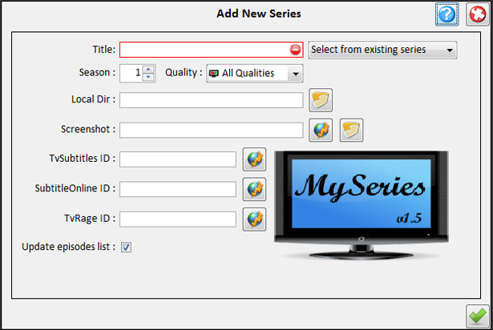
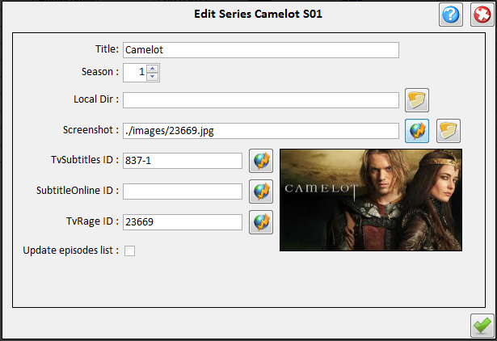

| Series Administration |
|---|
Series Administrations tasks consist of:
- Adding a series:
You can add a series in the following ways:
- Right clicking on the [Series Panel] and choose "Add a new series"
- Click on Toolbar menu Edit-Add series
Then the Add new series panel will show up:

- Title is the title of the series (eg Stargate Atlantis)
- Season is the series season (must be an integer)
- Subs is a link to a web page with the series subs (eg http://www.tvsubtitles.net/tvshow-54-5.html)
- Local Dir is the path to the directory that contains the series episodes
- Screenshot is the screenshot that will be displayed below the series table when this series is selected.
The screenshot file is saved in /images directory
- TvRage ID is the Id of the series in tvrage.com database.This can be found by clicking on the button
next to TvRage ID textfield. Check [Internet Update] for more info.
- Editing a series
You can edit a series in the following ways:
- Right clicking on the series you want to edit on the [Series Panel]
and choose "Edit series..."
- Select a series from the [Series Panel] and then click on Toolbar
menu Edit-Edit series...
Then the Edit new series panel will show up:

This is the same as the Add new series panel except that the fields are already filled with the series info.
- Deleting a series
You can delete a series in the following ways:
- Right clicking on the series you want to delete on the [Series Panel]
and choose "Delete series..."
- Select a series from the [Series Panel] and then click on Toolbar
menu Edit-Delete series...
|